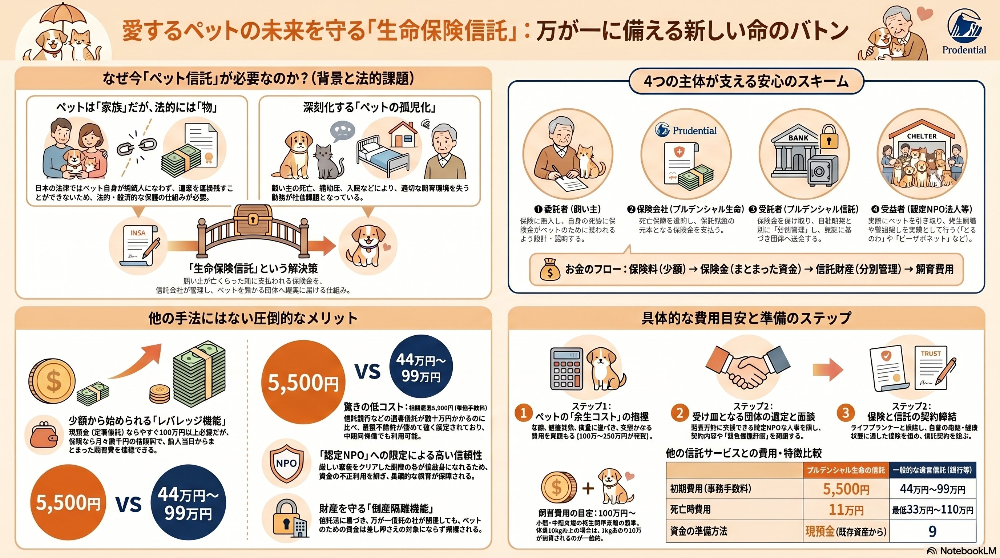

万が一のとき、
愛するあの子を、
誰に託しますか。
ペットは家族。でも法律上は「物」。
飼い主の死後、行き場を失う「ペットの孤児化」が、いま深刻な社会課題になっています。
月々の保険料で、愛するあの子の一生涯の飼育費用を確かに遺せる——
プルデンシャル生命の「生命保険信託」という、あたたかな命のバトンのかたち。

5,500円
100万円〜
なぜ今、「ペット信託」が必要なのか
心の中では家族でも、法律上は「物」。この壁が、残されたペットの命を脅かしています。
ペットは「家族」、でも法的には「物」
日本の法律では、ペット自身が遺産を相続することはできません。民法上「動産」として扱われるため、「お金をあの子に遺したい」という想いだけでは、法的な保護の仕組みにならないのです。
深刻化する「ペットの孤児化」
飼い主の高齢化、認知症、突然の入院・死亡。
行き場を失い、適切な飼育環境から引き離されてしまうペットたち。いま、静かに広がる社会課題です。
命を守る4つの主体の「保護のエコシステム」
個人の約束ではなく、金融・法律のプロフェッショナルインフラで、想いを100%確実に実行します。
委託者（飼い主）
生命保険に加入し信託を設定。少額の保険料で、自身の死後の備えを整えます。
保険会社
プルデンシャル生命
死亡保障を提供。万が一の際に、確実な保険金を創出します。
受託者
プルデンシャル信託
保険金を受け取り、自社財産と分別して安全に管理・交付します。
受益者
認定NPO法人等
資金を受け取り、ペットを引き取って終生飼養を実行します。
他の手法にはない圧倒的なメリット
少額から始められるレバレッジ機能、透明性の高い認定NPO法人連携、そして財産を守る倒産隔離機能。
少額から始められる
「レバレッジ機能」
現預金（定期信託）ならすぐに100万円以上の拠出が必要ですが、生命保険なら月々数千円の保険料で、加入当日からまとまった飼育費を確保できます。
認定NPO法人への限定で高い信頼性
所轄庁の厳しい審査をクリアした団体のみが受益者になれるため、資金の不正利用を防ぎ、長期的な飼養が保障されます。
財産を守る「倒産隔離機能」
信託法に基づき、万が一信託会社が破綻しても、ペットのための資金は差し押さえの対象にならず擁護されます。
相続税100%非課税の特大メリット
認定NPO法人への遺贈寄付となるため、遺した資金の全額が1円も欠けることなくペットのために使われます。
映像と音声で伝える、命のバトンのかたち
文字だけでは伝わらない、あたたかさと確かさを。動画と音声解説でご覧ください。
生命保険信託が創る「ペットのための安心な未来」
音声で聴く、ペット後見の全体像
法律・金融・動物愛護の3領域が交わって初めて完成する「真のペット後見」。
専門家による詳しい音声解説で、あなたのペースで理解を深められます。
他の信託サービスとの費用・特徴比較
費用面での参入障壁が極めて低く、一般の中間所得層にとって最も現実的な選択肢です。
| 比較項目 | プルデンシャル生命 (生命保険信託) |
三井住友信託銀行 (遺言信託・ペット安心特約付) |
|---|---|---|
| 資金の性格 | 保険金 少額から死亡時に創出 |
現預金 既存の資産から一括拠出 |
| 初期費用 | 5,500円 圧倒的低コスト |
440,000円〜990,000円 |
| 死亡時費用 | 110,000円 一括交付時 |
最低330,000円〜1,100,000円 |
| 受取人 | 認定NPO法人等に限定 安全性特化 |
個人・団体 幅広く指定可能 |
安心への道のり、具体的な5つのステップ
5つのステップで築く、将来への確かな備え。
余生コストの算出
体重・年齢から生涯費用（100〜200万円目安）を計算。
受け皿団体の選定
方針に共感できる認定NPO法人を探し、面談を実施。
ライフプランナーへ相談
プルデンシャル生命に最適な保険設計と見積もりを依頼。
信託契約の締結
緊急保護計画書と合わせて、信託契約を完了させます。
定期的な見直し
ペットの変化や自身の健康に合わせて内容をアップデート。
契約前に知っておくべき限界と「死角」
完璧な制度はありません。以下のリスクを理解し、総合的な対策を立てることが大切です。
●健康状態と年齢の壁
生命保険がベースのため、持病や高齢（上限あり）により加入できない場合があります。その場合は現金を原資とする別の信託を検討する必要があります。
●「生前」の飼育不能リスク
保険金は「死亡時」に発生します。認知症や施設入所など、生前の飼育困難時にかかる費用は別途預貯金等で計画しておく必要があります。
●NPO法人の存続リスク
実務を担う団体が将来活動を停止するリスクに備え、予備的受益者（第2順位の団体）の指定や、信託監督人の選任を推奨します。
詳しい資料をお手元に
より深く理解していただくための包括的な資料をご用意しました。
究極の愛情表現として
ペットは飼い主を選べません。
しかし、飼い主は自分の死後の「ペットの運命」を、
今の意志で決めることができます。
生命保険信託というインフラを賢く活用することは、
最期まで責任を持って寄り添うという、
飼い主としての最大の愛情表現です。